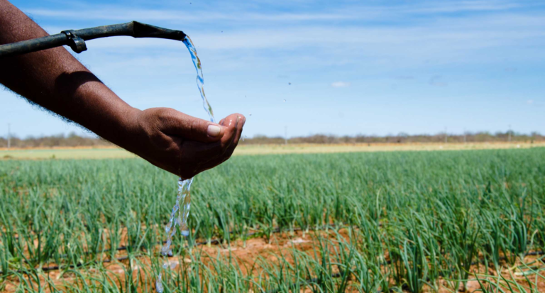

Os influentes utilizados na Agricultura
Quando falamos de água de reuso na agricultura temos implicações mais sérias no cuidado com a água.
O último relatório pleno de conjuntura da Agência Nacional das Águas (ANA) mostra que a agricultura é responsável por 67,2% do consumo de água no país. Sendo assim, as pesquisas para o uso adequado da água no campo e a possibilidade de reuso se tornam cada vez mais importantes.
A ANA atua principalmente no controle do quanto de água cada usuário retira dos rios. Mas, dessa vez, o desafio foi para a utilização de água de reuso.
Os projetos que foram propostos constam no Plano de Recursos Hídricos da Bacia do Piancó-Piranhas-Açu, no Rio Grande do Norte e Paraíba. Além das proposições, a atuação da ANA trouxe recursos para pesquisa que determinou a viabilidade dos projetos.
Foi descrito no plano de recursos a utilização dos efluentes que antes iriam para os rios. Após o tratamento, os componentes que ainda permanecem na água não são nocivos para o uso agrícola.
Os projetos deverão ser implantados em quatro municípios dessa região e permitirão abandonar o uso de água potável na irrigação.
Algo particularmente importante para a agricultura local é que em momentos de seca pode-se garantir a segurança hídrica com a utilização de efluentes. Visto que a produção de esgoto pela área urbana não cessa nesse período.
As reuniões para discussão dos detalhes foram coordenadas pela Agência de Desenvolvimento Sustentável do Seridó (ADESE).
Dentre as metas que o Brasil tem para uso a água, o reuso é uma delas. No médio prazo, estima-se que tenhamos um salto de 2 m³/s (estimados em 2017) para até 15 m³/s até 2030.